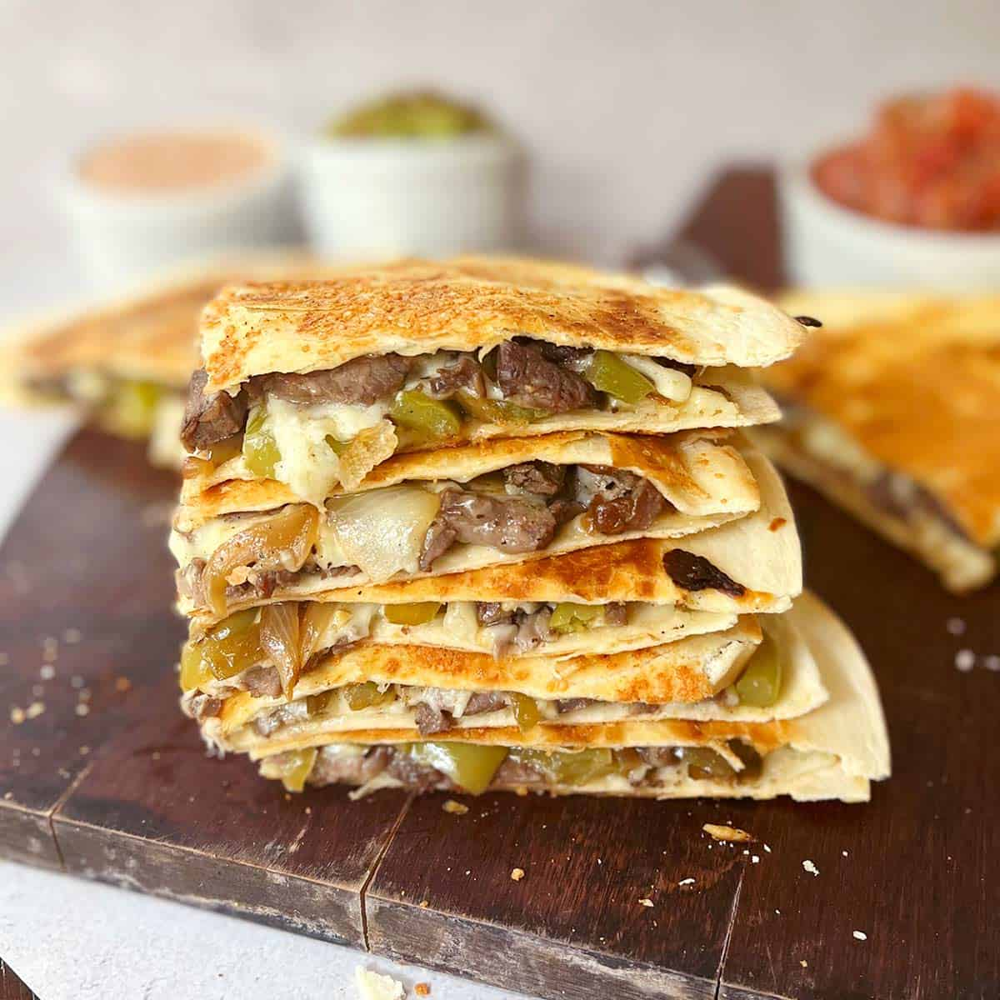

Steak Quesadilla Recipe

Description:
Totally awesome Steak Quesadilla recipe
Ingredients:
- 1x lb sirloin steak, thinly sliced
- 2x small onions, sliced
- 2x medium green bell peppers, sliced
- 1x cup BBQ sauce
- 8x 10in. flour tortillas
- 2x cups shredded cheddar cheese
Steps
- Preheat oven to 425 degrees Fahrenheit (220 degrees Celcius)
- Cook and stir steak in a skillet over medium heat until browned, 5 to 7 minutes
- Add onions and bell peppers, cook and stir until softened, 5 to 10 minutes
- Pour BBQ sauce over steak mixture and simmer until sauce is slightly reduced, 10 minutes
- Lay 4 tortillas on a baking sheet, top each with steak mixture, Cheddar cheese, and remaining tortillas
- Bake in preheated oven for 10 minutes. Flip quesadillas and cook until cheese is melted